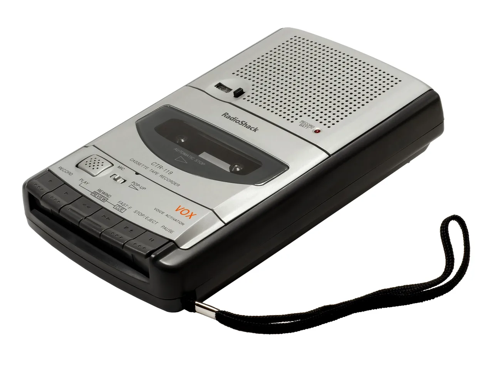
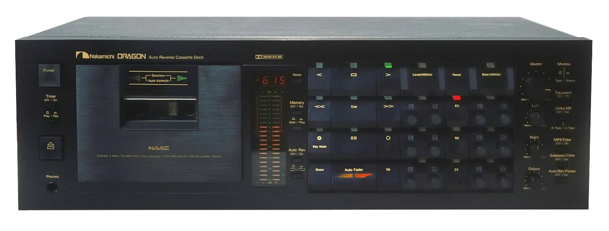

En las comunidades de la sierra peruana y boliviana, una pequeña grabadora a pilas y una cinta magnética de noventa minutos rompieron el monopolio secular de la prensa escrita y de las disqueras criollas. Una indagación sobre el casete campesino, la correspondencia oral y la democratización sonora de los Andes.
Durante más de cuatro siglos, la dominación colonial y republicana sobre las poblaciones indígenas de los Andes descansó sobre un arma silenciosa pero infinitamente más eficaz que las balas de los mosquetes o los decretos de los jueces: el monopolio de la letra escrita. Quien no sabía leer ni escribir en castellano quedaba automáticamente despojado de ciudadanía, desterrado del debate público, reducido a la condición de menor de edad ante las leyes del Estado y condenado a que otros hablaran, decidieran y legislaran en su nombre. La prensa escrita, los libros de historia y los boletines oficiales eran fortalezas inexpugnables levantadas por las oligarquías letradas para preservar sus privilegios y relegar la inmensa riqueza oral del quechua y del aymara a la categoría de folclor pintoresco.

Pero en las décadas de 1970 y 1980 ocurrió una revolución tecnológica silenciosa que ningún ministro de educación había anticipado. Por las trochas de contrabando que bajaban del puerto chileno de Iquique hacia las ferias de Oruro, Juliaca y Huancayo, empezaron a circular en miles de bultos unas pequeñas cajas rectangulares de plástico negro o plateado fabricadas en Japón y Taiwán: las grabadoras portátiles monoaurales de casete que funcionaban con cuatro pilas grandes de linterna, de marcas populares como Sanyo, National Panasonic o RadioShack. Aquellas máquinas humildes, dotadas de un micrófono incorporado y un botón rojo de grabación que se hundía con un chasquido firme, cambiaron para siempre el régimen de la comunicación andina.
El casete de cinta magnética de sesenta o noventa minutos —la clásica cinta de óxido férrico encerrada en una carcasa de plástico transparente con dos carretes dentados que giraban con la ayuda de un bolígrafo Bic cuando las pilas escaseaban— se convirtió en el primer periódico oral y en el correo epistolar de los desposeídos. En comunidades remotas donde no llegaban las carreteras ni las líneas telefónicas, los campesinos que tenían familiares trabajando en las minas de estaño de Potosí o en los talleres de confección clandestinos de Lima grababan casetes enteros con cartas de voz en su propia lengua originaria.
El ritual de la carta sonora era un acontecimiento conmovedor. La familia entera se reunía alrededor de la grabadora en la mesa de la cocina; el abuelo tomaba el micrófono con manos temblorosas y empezaba a relatar con la cadencia pausada del quechua cómo había estado la cosecha de papas, cuáles ovejas habían parido en el corral y qué compadre había fallecido en la última fiesta patronal; luego cantaba una madre para calmar el llanto del hijo ausente, y finalmente los niños mandaban saludos a los primos que nunca habían visto en la costa. Ese casete se envolvía en un trapo limpio de aguayo y se entregaba al chofer del camión mixto que bajaba a la ciudad, con la encomienda sagrada de ponerlo en manos del pariente migrante.
Pero el impacto del casete fue aún más demoledor en el ámbito de la producción musical. Hasta ese momento, las grandes compañías disqueras de Lima o de La Paz mantenían un control férreo sobre lo que se grababa y se radiaba en el país, privilegiando las baladas románticas de importación y exigiendo a los músicos andinos contratos leoninos y versiones descafeinadas de su música para hacerla digerible al gusto burgués. El casete pirata rompió en mil pedazos ese monopolio editorial.

En pequeños cuartos de adobe de El Alto o de Huancayo, los músicos campesinos montaban estudios de grabación clandestinos con dos micrófonos dinámicos y una mesa de mezclas casera. Grababan directamente al casete máster los huaynos con arpa, los carnavales con quenas y las primeras cumbias andinas; luego, en torres artesanales de duplicación conectadas con cables pelados, copiaban decenas de casetes por hora; fotocopiaban una carátula sencilla en papel bond de colores chillones con la foto del grupo y salían a vender las cintas en las ferias dominicales por una fracción de lo que costaba un disco de vinilo en las tiendas del centro.
En cuestión de meses, conjuntos que jamás habían sonado en las emisoras de radio oficiales vendían decenas de miles de casetes que se escuchaban en las chacras, en los camiones de carga y en los puestos de comida de los mercados. El pueblo se convirtió en su propio editor, en su propio distribuidor y en su propio oyente, construyendo una red horizontal de difusión cultural que anticipó en tres décadas la lógica descentralizada de las redes digitales contemporáneas.
Hoy en día, las cintas de casete han sido barridas por las tarjetas de memoria y los teléfonos inteligentes, y la mayoría de aquellas grabadoras rústicas descansan cubiertas de polvo en los desvanes campesinos. Pero en la memoria de los pueblos andinos queda grabada la huella imborrable de aquellos rectángulos de plástico que permitieron que la voz de los olvidados atravesara las cordilleras sin pedirle permiso al papel de los letrados, demostrando que la verdadera soberanía cultural no reside en la sofisticación de la máquina, sino en el coraje humano de quien la usa para no callar.
Fuentes.
- Martín-Barbero, Jesús (1987). De los medios a las mediaciones: Comunicación, cultura y hegemonía. Gustavo Gili.
- Rivera Cusicanqui, Silvia (2010). Ch'ixinakax utxiwa: Una reflexión sobre prácticas descolonizadoras. Tinta Limón.
- Castells, Manuel (1996). La era de la información: Economía, sociedad y cultura. Alianza Editorial.
Investigación sobre antropología de los medios, comunicación indígena y circulación sonora en los Andes.
Fuentes consultadas el 19.11.2026. Análisis e interpretación: RUMMOR. Edición privada para revisión.